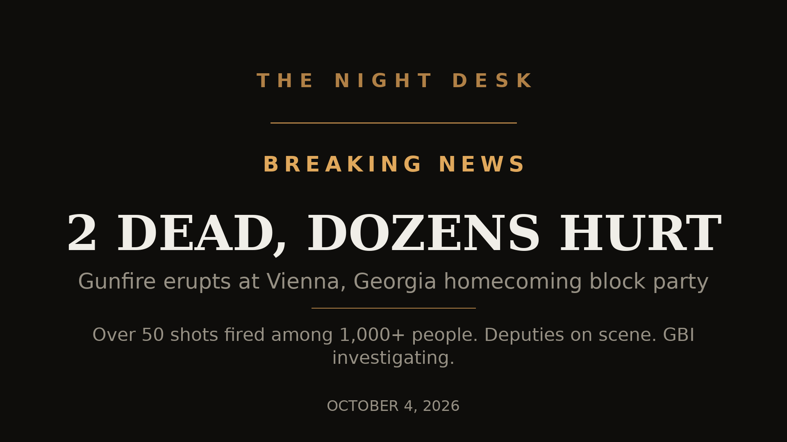

October 05, 2026
2 dead, 35 hurt as gunfire erupts at homecoming block party in Vienna, Georgia

Headline card by The Night Desk
VIENNA, Georgia — What was supposed to be a homecoming-weekend celebration turned into one of the worst mass shootings of the year in a small Georgia town early Sunday morning.
Around 1:25 a.m. on October 4, 2026, gunfire erupted on the 900 block of Pine Street in Vienna, where more than 1,000 people had gathered for a neighborhood block party. More than 50 shots were fired across at least two locations roughly a block apart, according to Dooly County Sheriff Craig Peavy.
Two men were killed: Jaquevion Jackson, 21, of Cordele and Macaleb Jackson, 23, of Hawkinsville. Dooly County Coroner Brett Walls said both were pronounced dead at the scene with fatal gunshot wounds and called the scene "horrific."
Thirty-five more people were injured and taken to several regional hospitals. The Georgia Bureau of Investigation said some suffered gunshot wounds while others were struck by vehicles as the crowd fled. The injured range in age from 14 to 51; some were in critical condition Sunday evening, others stable.
Deputies were already there
What makes this case so unsettling: deputies were on patrol at the party when the shooting started.
"We don't know if it's coming at us or someone else," Peavy told reporters. "You just have to keep doing what you're doing and hope you don't get hit by gunfire."
Peavy said his deputies were positioned at the ends of the four-block radius the party spanned — and even while officers were working the first scene, more gunfire erupted about a block away.
Ashley Gee, 30, who came to Vienna from nearby Turner County, described the gunfire to The Atlanta Journal-Constitution: "Like a machine gun. One person ran, and everybody started running."
Peavy said Friday night's festivities had "gone well" with "respect from the community" while deputies patrolled. Saturday night, he said, was "a different story."
Investigation underway
The Georgia Bureau of Investigation is leading the probe at the sheriff's office's request. As of Sunday evening, no arrests had been reported and no motive had been identified.
GBI Special Agent in Charge Jerry Jones told reporters the bureau wasn't yet prepared to identify suspects but urged anyone who attended the party to come forward: "We've been conducting interviews. The crime scene is ongoing… but our goal is to identify anyone that may have information."
Investigators were working to determine whether the gunfire at the different locations was part of the same confrontation. Once the investigation is complete, the case file goes to the Cordele Judicial Circuit District Attorney's Office.
Homecoming weekend
The shooting came during homecoming week for Dooly County High School. Dooly County Schools Superintendent Sherrod Willaford stressed the block party was not a school-sponsored event, but said the district recognized "its impact may reach many of our students, families, and staff." Schools opened Monday with additional safety measures in place.
About 100 people gathered for an impromptu prayer vigil at the Vienna courthouse Sunday morning.
Vienna Mayor Eddie Daniels said the shooting happened about a block from his own house, where he saw "a lot of blue lights." He said the city hadn't issued any permit for the block party.
Anyone with information is asked to contact the GBI Regional Investigative Office in Perry at (478) 987-4545, or submit anonymous tips at 1-800-597-TIPS (8477), online at gbi.georgia.gov/submit-tips-online, or through the See Something, Send Something app.
Sources: CNN, USA Today, Reuters, Georgia Bureau of Investigation press release.
Source: CNN — read the original report
← Back to latest stories